Books
Edited book
-
2025
Kinesiología Musculoesquelética: Experiencia, Tecnología e Innovación
Editorial Ígneo, 348 pp. ISBN 978-9564240527
Book chapters
First pages are shown so readers can preview and cite each chapter.
-
2025
Artrosis Trapeciometacarpiana
In: Kinesiología Musculoesquelética: Experiencia, Tecnología e Innovación, 99–102. Editorial Ígneo
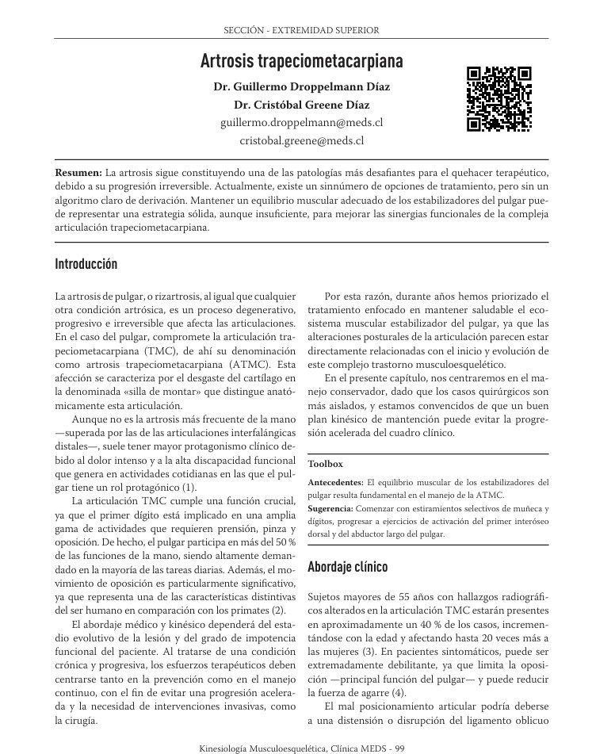
-
2025
Atrapamientos Neurales
In: Kinesiología Musculoesquelética: Experiencia, Tecnología e Innovación, 85–89. Editorial Ígneo
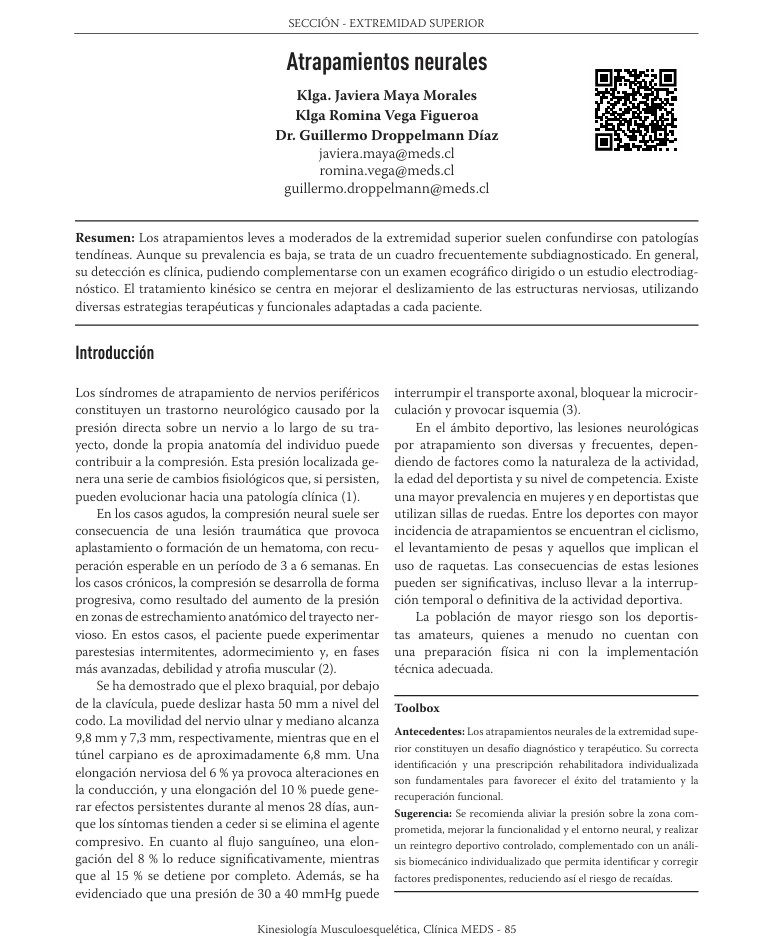
-
2025
Capsulitis Adhesiva de Hombro
In: Kinesiología Musculoesquelética: Experiencia, Tecnología e Innovación, 138–143. Editorial Ígneo
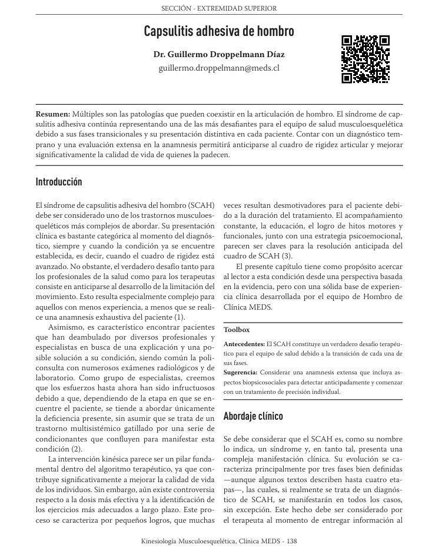
-
2025
Fuerza Prensil y Parámetros Neuromusculares
In: Kinesiología Musculoesquelética: Experiencia, Tecnología e Innovación, 291–294. Editorial Ígneo
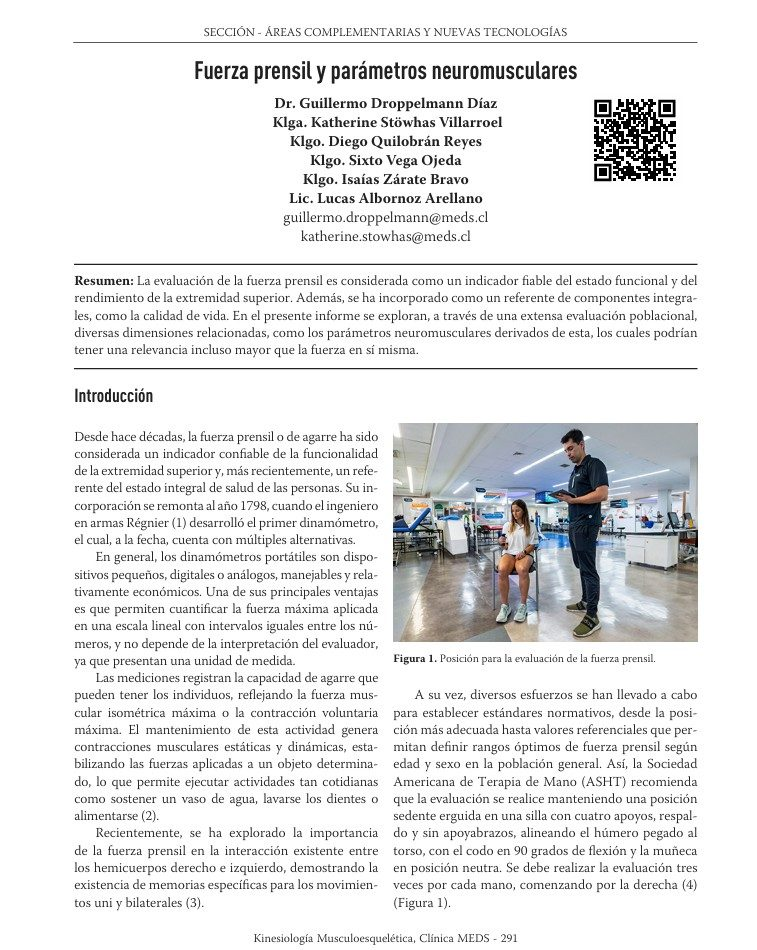
-
2025
Inteligencia Artificial y Desórdenes Musculoesqueléticos
In: Kinesiología Musculoesquelética: Experiencia, Tecnología e Innovación, 314–318. Editorial Ígneo
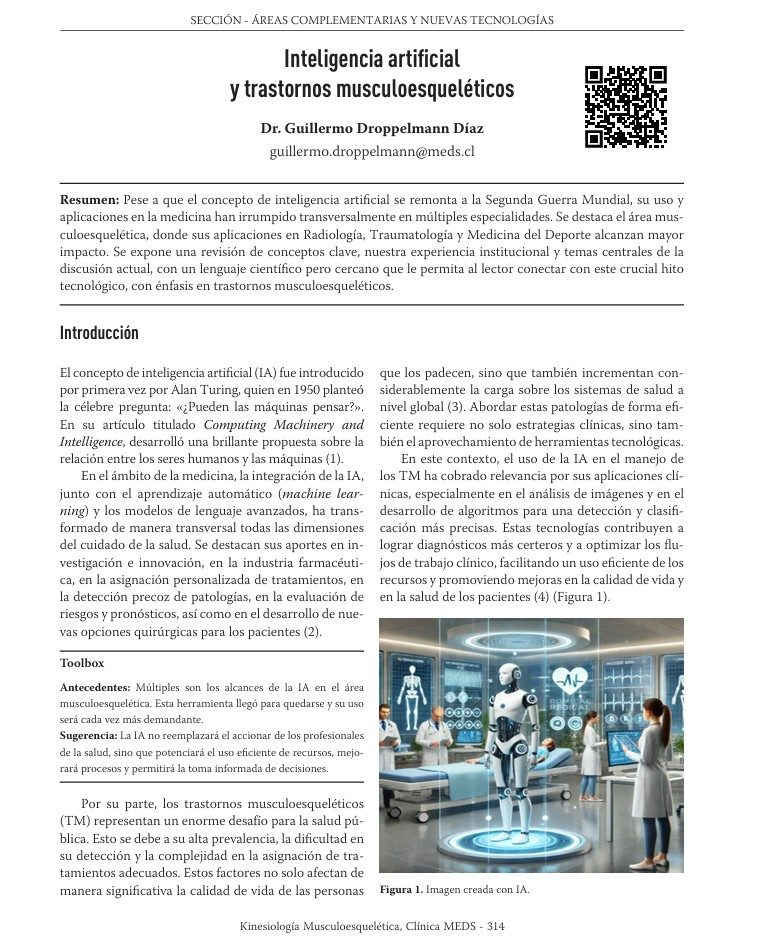
-
2025
Manguito Rotador Postquirúrgico
In: Kinesiología Musculoesquelética: Experiencia, Tecnología e Innovación, 116–120. Editorial Ígneo
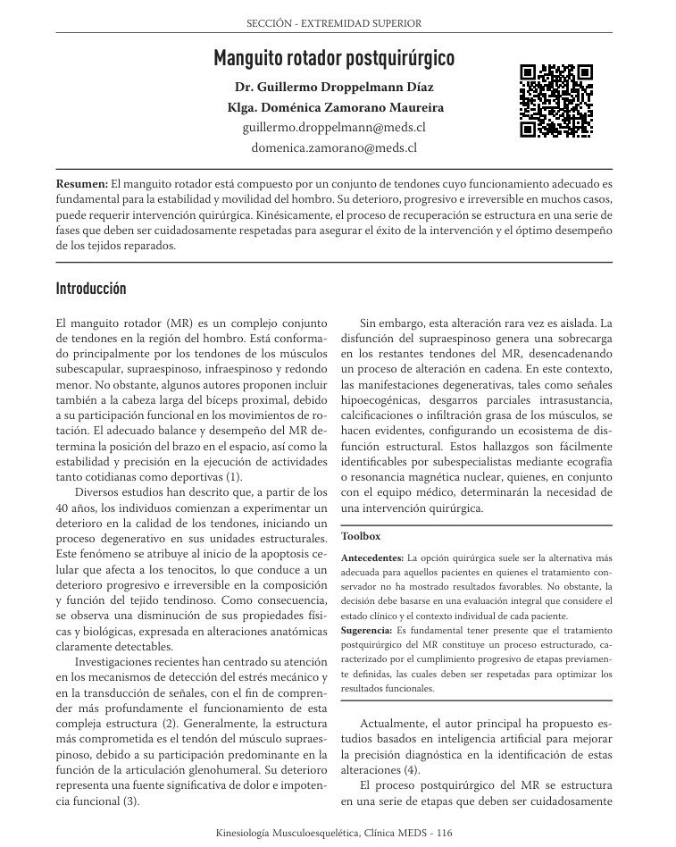
-
2025
Síndrome de Dolor Regional Complejo
In: Kinesiología Musculoesquelética: Experiencia, Tecnología e Innovación, 90–93. Editorial Ígneo
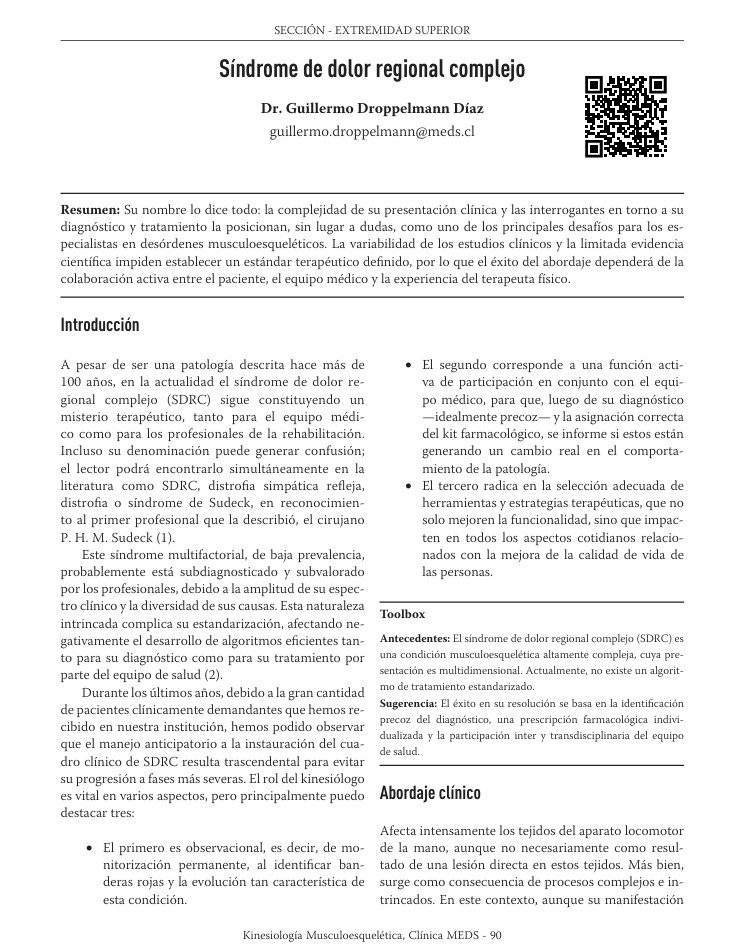
-
2025
Tendinopatía Lateral del Codo
In: Kinesiología Musculoesquelética: Experiencia, Tecnología e Innovación, 63–66. Editorial Ígneo
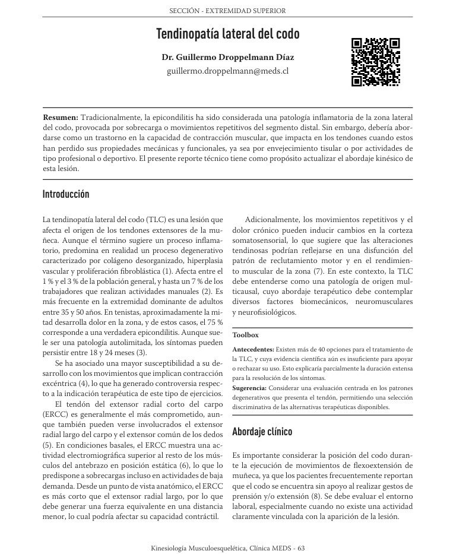
-
2025
Tendinopatía Medial del Codo
In: Kinesiología Musculoesquelética: Experiencia, Tecnología e Innovación, 67–71. Editorial Ígneo
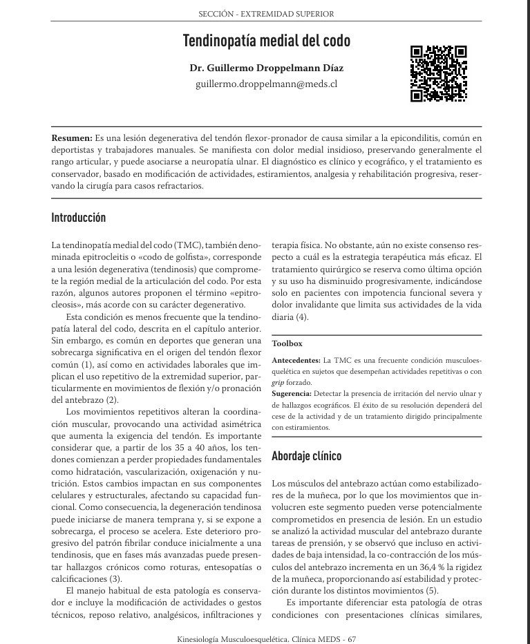
-
2022
Análisis Supervisado en Imágenes: Alcances Prácticos
In: Medicina y Ciencias Aplicadas al Fútbol, 840–849. Mediterráneo
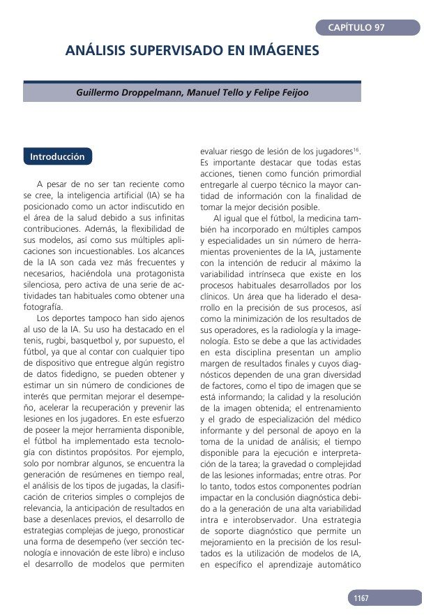
-
2021
50 Años de Evolución de Enfermedades Crónicas No Transmisibles en Chile
In: Desafíos del Chile Contemporáneo, Universidad del Desarrollo
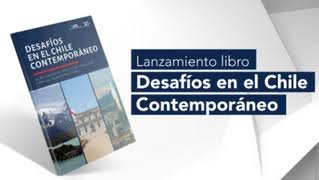
-
2017
Bioética en la Actividad Física y el Deporte
In: Actividad Física y Ejercicio en Salud y Enfermedad, 427–438. Mediterráneo

-
2017
Enfermedades Crónicas No Transmisibles, Actividad Física y Políticas Públicas
In: Actividad Física y Ejercicio en Salud y Enfermedad, 415–426. Mediterráneo